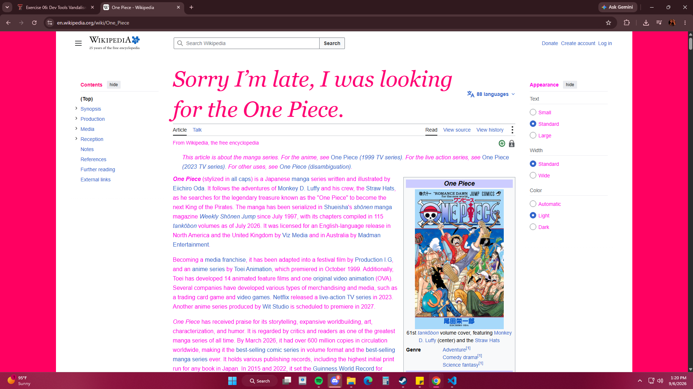

My Dev Tools Vandalism
I used browser developer tools to temporarily "vandalize" a website. Below is a screenshot showing my changes. These edits only appeared on my computer and did not affect the actual website.

What I "Vandalized"
For this exercise, I used the browser’s developer tools to make changes to the Wikipedia website. I changed the background color, the heading color, and the font size. I edited the CSS properties in the developer tools to see how the appearance of the webpage would change. I chose these changes because they were easy to see and made the normal Wikipedia page look noticeably different. It was interesting to see how changing just a few CSS properties could completely change the way the page looked. The changes also helped me understand how HTML and CSS work together. The HTML provides the content and structure of the page, while CSS controls things like colors, fonts, and sizes. Some changes worked immediately when I edited the correct CSS property, while others did not work when I selected the wrong element or property. Using the developer tools helped me understand that I can experiment with CSS without permanently changing the actual website. I think this exercise gave me a better understanding of how developer tools can be useful when creating and designing my own webpages.